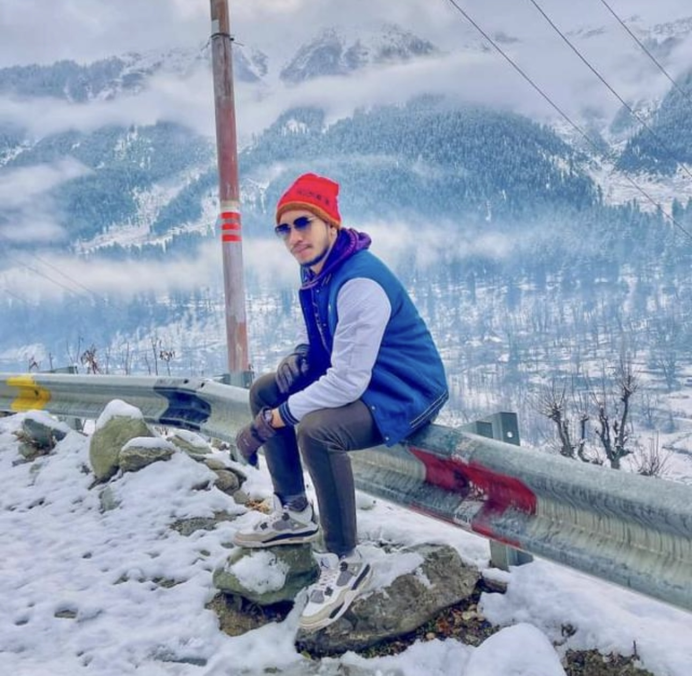
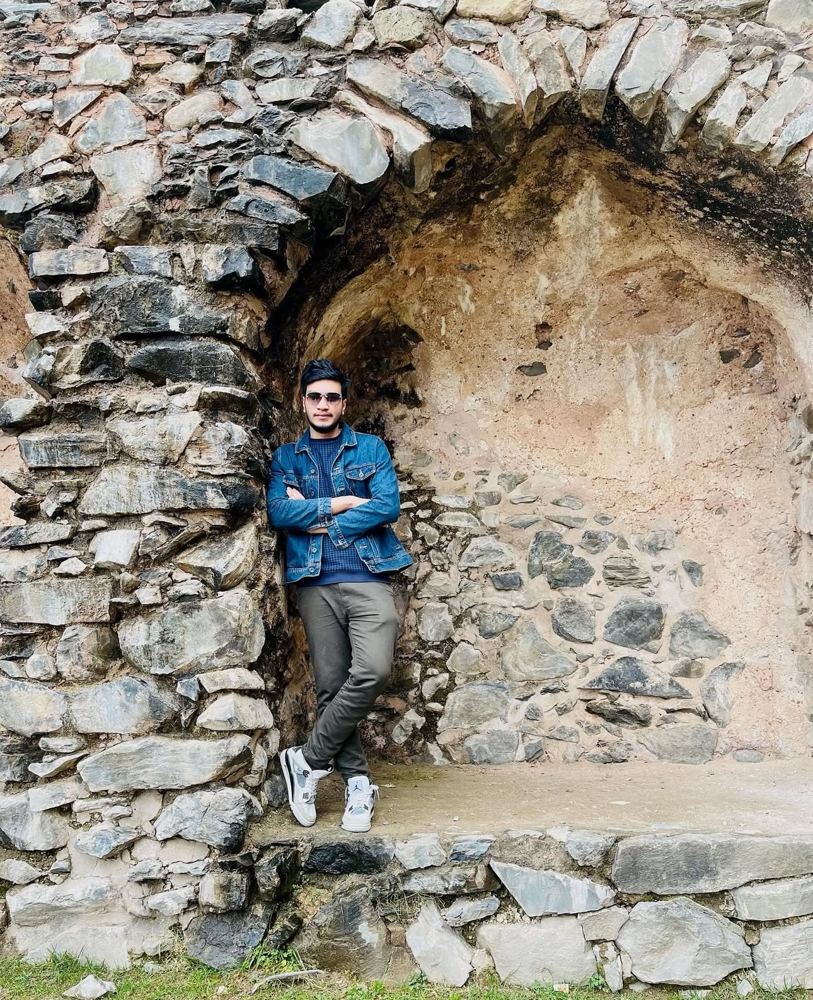

One of my most challenging and rewarding hikes! We set out to conquer Farchant and Mühldorfl, a journey that tested our stamina, but the experience was unforgettable.
The hike started early in the morning, and after about 20 minutes, we were greeted by a stunning waterfall — a beautiful preview of the adventure ahead.
The real challenge began as we continued toward Farchanter Alm, a demanding 4-hour climb. Though we took only brief rests, the journey pushed our endurance to the limit.
By the time we reached the top, every step of the hike was rewarded with an incredible panoramic view of the mountains and valleys below. Tired, sore, and with aching feet, it felt surreal to stand above the world and take in the beauty surrounding us.
This hike reminded me that some of the most memorable experiences in life come from pushing our limits and appreciating nature’s grandeur.
“The climb was hard, but the view from the top made every step worth it.”
🇪🇸 Unforgettable Trip to Spain
29.07.2025
This was probably the best tour I’ve ever had in my life. The feelings were unreal, and the memories from just three days will last forever. Spain had always been a dream destination for me since childhood, and finally experiencing it with my university friends was incredible.
We stayed in an Airbnb near Palma Beach, and the entire day was spent swimming, soaking up the sun, and enjoying the beach. The vibe at the beach was unbelievable — music, laughter, and the energy of people around us made it magical.
At night, instead of sleeping, we stayed awake talking, sharing stories, and watching the stars. The food in Spain was amazing, with fresh seafood, tapas, and local delights making every meal a treat.
Although three days were too short, we packed so much into the time: swimming, exploring, enjoying local culture, and creating unforgettable memories. I always had a weak point for Spain, and being there finally felt like a dream come true.
This trip has left a permanent mark on me — the beach, the people, the vibe, the laughter — everything was perfect. I will never forget it, and I want to return whenever I can.
“Some trips don’t just give memories — they change your soul forever.”
⚓ Exploring Bremerhaven, Germany
23.07.2024
I spent three days in Bremerhaven with a brother. Despite it being a long 9-hour journey, driving on the Autobahn with the scenic views of Germany made the trip feel much shorter and very enjoyable.
In Bremerhaven, I explored the bustling port and saw many historical ships, which was fascinating. We also visited the zoo and enjoyed the serene environment.
On our way back to Ingolstadt, we spent a night in Hannover with a Bangladeshi couple. After a long time, I got to enjoy home-style dishes and warm company, making it a very memorable night.
The following morning, we continued the 9-hour drive back. Though I didn’t drive this time, the journey was filled with fun, laughter, and breathtaking views across Germany.
Overall, it was a fantastic trip that balanced adventure, relaxation, and memorable experiences.
“Long journeys become short when shared with good company and unforgettable moments.”
🇦🇹Spontaneous Road Trip to Innsbruck, Austria
19.07.2025
One of my acquaintances’ older brothers had just gotten his driving license, and we decided to go on a spontaneous long drive.
We hired a car and set off with no fixed plan, aiming to just enjoy the journey and the freedom of the open road.
The drive to Austria took about three hours, and the highlight was cruising on the Autobahn with no speed limits — the thrill was unforgettable.
The scenic beauty along the way was mesmerizing: rolling hills, towering mountains, and lush greenery stretched as far as the eyes could see.
Once we reached Innsbruck, we explored some of the colorful buildings in the old town, visited a few museums, and even caught a live concert.
To end our adventure, we enjoyed a delicious Afghan meal before heading back home that night.
It was a perfect blend of freedom, spontaneity, and unforgettable memories with friends.
“Sometimes the best trips are the ones you don’t plan for.”
🏞️ Morning Adventure to Eibsee, Germany
14.07.2025
After a late night with almost no sleep, we woke up early with a bit of sleep deprivation—but excitement and energy drove us to Eibsee.
It was a spontaneous morning adventure with my two friends, and we made the most of every moment!
Despite being tired from the previous night, the moment we arrived at Eibsee, the breathtaking views energized us instantly.
The lake's crystal-clear water reflecting the mountains, the fresh morning air, and the laughter shared with friends made it an unforgettable trip.
We hiked a bit, took photos, and just soaked in the beauty of nature. It reminded me that sometimes, spontaneity and adventure create the best memories.
“Even sleep deprivation can’t stop the energy of a morning adventure with friends!”
🌙 My First Eid in Germany
30.03.2025
Eid Mubarak to everyone! This year was unlike any other—my first Eid in Germany, and the first time I celebrated without my family and closest friends beside me.
This Eid felt quieter than the ones I grew up with. No early morning rush at home,
no aroma of special Eid dishes from the kitchen, and no familiar voices filling the room with joy.
Waking up alone in a new country made me realize how much those small moments truly mean.
But as the day went on, I reminded myself that Eid is more than tradition—it's about gratitude,
patience, and finding peace wherever we are. Even without the celebrations I’m used to,
I chose to embrace the day with a thankful heart. I carried the love and memories of my family
with me, knowing distance can never take them away.
This Eid taught me something important: even in unfamiliar places, we can create our own
warmth, meaning, and joy. And that is what makes the journey worthwhile.
“Eid is not only about the people around us, but also the gratitude we carry within us.”
🎓 My Scholarship Journey
04-12-2024
I am honored to have been selected for the Deutschlandstipendium Scholarship! This scholarship has been a key milestone in my academic career, and I want to share my journey with you.
I am truly grateful for the opportunity it provides. I look forward to making the most of this support as I continue to pursue my studies and explore new opportunities ahead.
A big thank you to the Technische Hochschule Ingolstadt for this incredible recognition. I’m excited to see where this journey will take me next!
“This scholarship isn’t just financial support, but also an affirmation of my commitment to my studies.”
🇦🇹 A Transformative Journey to Austria
26-10-2024
In the summer of 2024, I had the incredible opportunity to travel to Austria, a country known for its rich history, stunning landscapes, and cutting-edge advancements in technology.
My first stop was Hallstatt, a village so picturesque it almost felt like stepping into a painting. Nestled between the Dachstein Alps and the tranquil Hallstätter See lake, Hallstatt is often referred to as one of the most beautiful places in the world, and for good reason. The village's quaint streets, colorful houses, and serene lakeside views made it a peaceful retreat.
I spent my days wandering around the village, enjoying the stunning scenery,
and even took a boat ride across the lake to get a different view of the village from
the water. The atmosphere was calm and relaxing, a perfect break from the usual
hustle and bustle of daily life.After my time in Hallstatt, I headed to Salzburg, the birthplace of the legendary composer Wolfgang Amadeus Mozart. Salzburg was a city that blended history, culture, and beauty effortlessly. I visited the Hohensalzburg Fortress, which offered breathtaking views of the city below, and strolled through the old town, admiring the baroque architecture and charming squares.
“Austria wasn’t just a trip—it was a milestone in my academic journey.”
🇮🇳 My Incredible India Tour
From the colorful chaos of local markets to the serene shikara rides on Dal Lake, my journey across India was nothing short of magical. This trip blended adventure, culture, and unforgettable landscapes, leaving me with lifelong memories.
📍 Delhi – The Historical Marvel
The capital city welcomed me with its rich history and vibrant energy. Exploring iconic landmarks like the **India Gate** and **Qutub Minar** felt like stepping into the pages of history.
📍 Kashmir – The Paradise on Earth
Embarked on the breathtaking journey to **Sonamarg's second phase at 12,000 ft**. The high altitude made each breath a challenge, but the views were beyond rewarding. From **shikara rides on Dal Lake** to snow-capped mountain treks, Kashmir was a dream come true. 🏔️❄️
📍 Kolkata – The Cultural Heartbeat
Walking through the lively streets of Kolkata, I felt the pulse of India’s deep-rooted traditions. **Victoria Memorial, Howrah Bridge, and the bustling New Market** made this city a cultural delight.
📍 More Adventures Await!
Every turn in India had something new to offer—breathtaking landscapes, mouthwatering street food, and interactions with amazing locals. From the **spiritual aura of Varanasi** to the **majestic forts of Rajasthan**, this trip was an endless adventure.


“This journey was more than just a trip—it was an experience of a lifetime.”